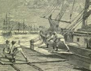
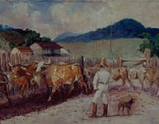
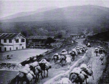

{kind=link}
Pintura de Antônio Ferrigno
{kind=link}
O porto do Rio de Janeiro no contexto das reformas urbanas de fin du siècle (1850-1906)
{kind=link}
Alfredo Norfini - Descascamento de café a pata do boi, 1820
{kind=link}
Viagens de Tropeiros entre Serras
INTRODUÇÃO DO CAFÉ NO BRASIL
A introdução do café no Brasil é uma história que remonta aos séculos XVIII e XIX. O café foi descoberto na Etiópia e as pessoas começaram a cultivar e consumir a planta por volta do século IX e começou a se espalhar pelo mundo através do comércio e das viagens dos colonos. Na Europa, o café chegou pela primeira vez em 1615, trazido por mercadores venezianos. No século XV, o café começou a ser cultivado no Oriente Médio, em áreas como Arábia, Pérsia (atual Irã) e Egito. Beber café tornou-se uma parte importante da cultura árabe, era uma alternativa a bebidas alcoólicas, consumida principalmente por monges em rituais religiosos pois, os auxiliavam durante as noites de reza e vigília noturna. Já no século XVII o café chegou na Europa introduzido pela primeira vez em Veneza, Itália, por comerciantes venezianos. O café logo se espalhou por outras partes da Europa, tornando comum o hábito de beber café. O café passou a se espalhar pelas colônias durante o período colonial, chegou ao Brasil no ano de 1727, em Belém do Pará. Foi trazido da Guiana Francesa por Francisco de Mello Palheta (Sargento-Mor), a pedido do então governador do Maranhão e Grão Pará, que o enviara às Guianas com essa missão. Já naquela época o café possuía grande valor comercial. As condições climáticas do Brasil foram favoráveis e logo o cultivo do café se espalhou para outros Estados. A mata da Tijuca no Rio de Janeiro foi o ponto de partida para grandes plantações, que se estenderam para Angra dos Reis (RJ), Paraty (RS) chegando a São Paulo pela cidade de Ubatuba. Não demorou muito para os cafezais ocuparem o Vale do Paraíba, Foi ao longo do Vale do Paraíba, região que abrange terras do Rio de Janeiro e de São Paulo, que o café, considerado um artigo de sobremesa, se tornou o principal na pauta de exportação brasileira. A região do Vale do Paraíba era bastante apropriada para a cafeicultura, pois era abundante em terras virgens e tinha um clima favorável. A implantação das fazendas se deu pela tradicional forma de plantation, ou seja, grandes propriedades, cultivo para exportação e uso de mão-de-obra escrava. Para começar a produção de café era necessária uma boa quantidade de recursos, pois se tinha de comprar escravos, derrubar a mata e preparar a terra. O cafeicultor não teria um lucro imediato com a plantação, já que os cafezais só produzem depois de quatro anos. Por isso, acredita-se que os primeiros cafeicultores já tinham um capital de reserva, provavelmente oriundo da expansão do comércio que houve após a vinda de Dom João VI, em 1808. Contudo, a história do Vale do Paraíba e o café foi abreviada por causa do tipo de exploração predatória e desmedida das terras, o que comprometeu de forma significativa a fertilidade dos solos e a produtividade. Depois que a capacidade de produção do Vale se esgotou, o café passou a ser cultivado em outra região do Estado de São Paulo: a área que fica no Oeste Paulista e abrange cidades como Campinas, Rio Claro e Araraquara.